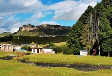
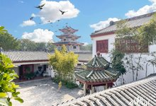

旅行家专栏
专栏首页

旅行攻略推荐
更多

未知旅行实验室
查看全部>

加入马蜂窝
了解详情>
马蜂窝旅游网最新资讯
04年07日
马蜂窝"云旅游"直播的攻与守
04年01日
马蜂窝的"云上战疫"
02月19日
科技"战疫":马蜂窝大数据赋能旅游业
02月13日
陈罡:疫情下旅游业的"守恒与求变"
02月06日
马蜂窝将退订完成率定为最高KPI
09月28日
马蜂窝国庆白领出游偏好调查：超7
写游记

凡有等待，就有启程 自从我以前看过扎尕那的照片，我就有种一定要去 甘南 的欲望，这次 甘南
之行和8月份青甘行本应是一体的，可是在旅行一半的时候，女儿说学校通知一开学就考试，我们匆匆...
.jpeg)
47
前言 2020多灾多难的一年，不能出国了，也正好看看祖国的大好河山了，SO我们就从中华民族的母亲河，黄河出发，来一次 山西 陕西 开始之旅吧
我和之前一样第一次去某个地方旅游之前，总是会...
.jpeg)
133
序 “从婚礼结束后就一直在计划蜜月旅行的事情，为期两周的蜜月总觉得去一个海岛躺着不划算，就想着去一个远一点的地方吧，远点，再远点。。。扒着地球仪的我最后把目光锁定在了 新西兰 （...
.jpeg)
17
“在 西藏 ，一个佛教徒一生最大的心愿莫过于去 冈仁波齐 朝圣。他们认为： 围绕 冈仁波齐 转山一圈，可洗尽一生罪孽； 转十圈可在500轮回中免受地狱之苦； 转百圈者便可以升天成佛。
而释迦...
.jpeg)
133
《 碎碎念 》 2021年的元旦假期，只有三天的时间，我们决定来一次东都 洛阳 访古之旅。顺便去 三门峡
的湿地公园，欣赏一下自西伯利亚飞过来过冬的天鹅，还有前段时间因看了半部《大秦赋》...
118
赴一场迟到之约 不知从何时起，对高原、对藏区，情不知所起一往而深。 记忆里的酥油香、藏歌亮、天空净......总能让我很心安。
我不是一个有信仰的人，却对磕长头的虔诚无比敬畏，对藏区教...
.jpeg)
41

转眼间，这个魔幻的2020年，还有半个月就要结束啦~ 趁着年底，立马带上256G的胃，偷溜出 广州 踏上新的美食之旅！ 大多数人了解 潮汕 美食，都是从一颗弹跳力十足的牛肉丸开始……
食神蔡澜...
.jpeg)
39
1、行程概览 这一段趴介绍的文字会比较多，想研究行程的可以好好看一下~ 不想看文字的就直接跳过吧 我的行程是先传统318，拐去玩亚丁后，走两天 滇藏线 ，从 云南
重新入藏，继续传统318。...
124
已经记不得第几次去 南京 了，这座历史与现代完美融合的城市，每一次都会给我带来不一样的体验和惊喜。六朝古都，十朝都会，古老又充满生机。
2020年的最后一个周末，和家属将游玩目的地锁定...
.jpeg)
88
回忆序
2020年的旅行，最终还是被压到了年底。连续两年圣诞在外旅行，让我感受到了漂泊。在异地看他人过节，难免有些想起了自己的亲人和朋友。好在今年有小刘刘陪我，这是我们第一次长途旅...
15